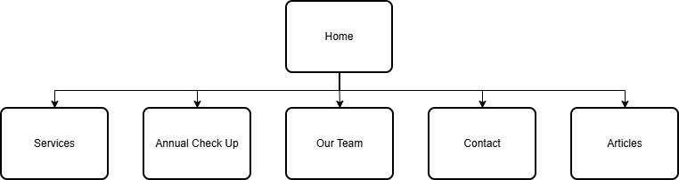
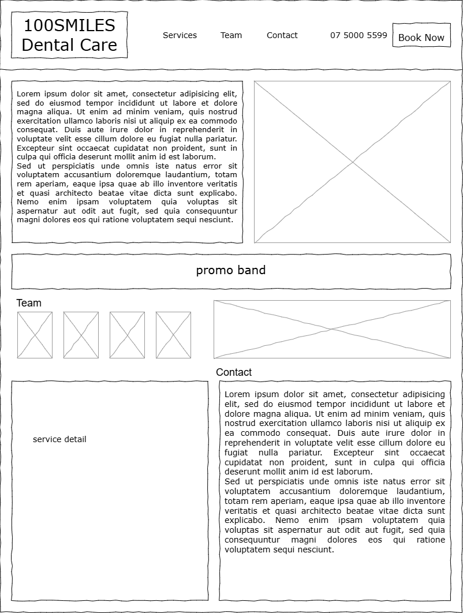

Name:Edith Wong Wen Jia
The goal of the 100SMILES Dental Care website is to increase new patient bookings by 25% within six months by improving the clinic's online presence and accessibility. The site will provide clear service information, promote current discounts and make it easy for visitors to contact or book appointments online.
The website's success will be evaluated based on measurable improvements in engagement such as tracking the number of new appointments made through the website's email booking link with a goal of increasing online bookings by 25% within six months. Engagement with promotional offers such as the 20% first-visit discounta nd 10% annual check-up discount, will also be monitored to determine the effectiveness to calls-to-action. Success will be achieved when there is a measurable increase in online inquiries, appointment requests, and positive user feedback about the site’s usability and appearance.
The main audience for the 100SMILES Dental Care website is local families and individuals in Razole who need reliable, long-term dental care. The site will use a friendly and professional tone with simple language and welcoming images to make visitors feel comfortable. It will have clear navigation, a mobile-friendly layout, and easy access to “Book Now” and “Contact Us” links. To build trust, the website will also feature staff profiles, clinic details, and short articles that help visitors learn more about dental care.

